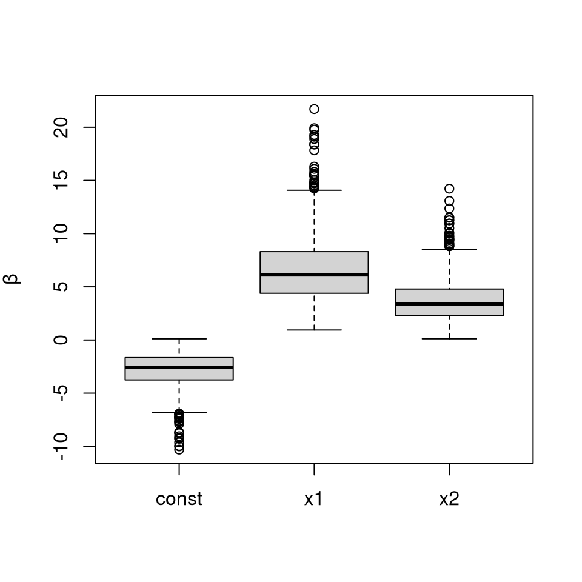

The TruncatedNormal package provides numerical routines to estimate the probability that Gaussian and Student random vectors fall in a hyperrectangle of the form \([\boldsymbol{l}, \boldsymbol{u}]\), namely \(\Pr(\boldsymbol{l} \leq \boldsymbol{X} \leq \boldsymbol{u})\) for \(\boldsymbol{X} \sim \mathcal{N}(\boldsymbol{\mu}, \boldsymbol{\Sigma})\) or\(\boldsymbol{X} \sim \mathcal{T}_{\nu}(\boldsymbol{\mu}, \boldsymbol{\Sigma})\), where \(\boldsymbol{\mu}\) is a location vector, \(\boldsymbol{\Sigma}\) is a scale matrix and \(\nu\) is the degree of freedom of the Student vector.
The minimax exponential tilting method is an alternative to the separation of variables estimator implemented in the package mvtnorm; the package mvPot also implements the separation of variables method and uses quasi Monte Carlo, but is restricted to integrals of the form \([-\boldsymbol{\infty}_D, \boldsymbol{u}]\).
Example 1: Simulation of Gaussian variables subject to linear restrictions
Suppose we wish to simulate a bivariate vector \(\boldsymbol{X} \sim \mathcal{N}(\boldsymbol{\mu}, \boldsymbol{\Sigma})\) conditional on \(X_1-X_2 < -6\). Setting \(\mathbf{A} = \left( \begin{smallmatrix} 1 & -1 \\ 0 & 1\end{smallmatrix}\right)\). We can simulate \(\boldsymbol{Y} \sim \mathcal{N}(\mathbf{A}\boldsymbol{\mu},\mathbf{A}\boldsymbol{\Sigma}\mathbf{A}^\top)\) conditional on \(\boldsymbol{l} \leq \boldsymbol{Y} \leq \boldsymbol{u}\) and then set \(\boldsymbol{X} = \mathbf{A}^{-1}\boldsymbol{Y}\).
library(TruncatedNormal) set.seed(1234) sigma <- matrix(c(1,0.9,0.9,1), ncol = 2) mu <- c(-3, 0) u <- c(-6, Inf) A <- matrix(c(1,-1,0,1), ncol = 2, byrow = TRUE) # Sample truncated Gaussian variables and back-transforms Y <- rtmvnorm(n = 1e2, mu = c(A %*% mu), sigma = A %*% sigma %*% t(A), ub = u) X <- t(solve(A) %*% t(Y)) plot(X, panel.first = abline(a = 6, b = 1, col = 2), xlab = expression(x[1]), ylab = expression(x[2]), xlim = c(-8,0), ylim = c(-5,5)) # Compare with unconstrained samples points(rtmvnorm(n=1e2, mu = mu, sigma = sigma), col = 4)

Example 2: Estimating the probability of rare events
We can estimate numerically the probability that \(\boldsymbol{X} \geq \boldsymbol{0}_d\) for \(\boldsymbol{X} \sim \mathcal{N}(\boldsymbol{0}_d, 0.5\mathbf{I}_d + 0.5\mathbf{1}_d\mathbf{1}_d^\top)\), which is known and equal \((d+1)^{-1}\).
d <- 1000 sigma <- 0.5 * (diag(d) + matrix(1, d, d)) est <- pmvnorm(sigma = sigma, lb = rep(0, d), type = "qmc", B = 1e4) print(est) #> [1] 0.0009987621 #> attr(,"relerr") #> [1] 0.007122615 #> attr(,"upbnd") #> [1] 0.002963262 #Compare est with exact value by computing relative error abs(est - 1/(d+1))*(d+1) #> [1] 0.0002391284 #> attr(,"relerr") #> [1] 0.007122615 #> attr(,"upbnd") #> [1] 0.002963262
Example 3: High-dimensional truncated Student with positive correlation
d <- 60 sigma <- 0.1 * diag(d) + 0.9 * matrix(1, d, d) l <- (1:d)/(4*d); u <- l + 2 X <- rtmvt(n = 1e4, sigma = sigma, lb = l, ub = u, df = 3) boxplot(t(X) ~ as.factor(1:d), xlab = "dimension index", ylab = expression(X["i"]))

Example 4: Normal quantile function with tail-precision
The package includes two normal quantile functions that can be used to simulate truncated Gaussian variables with high precision using the inverse transform method (which is useful for quasi Monte Carlo integration) or a fast alternative.
l <- 9; u <- 9.5 hist(rtnorm(n = 1e4, lb = l, ub = u), xlim = c(9,9.5), xaxs = "i", main = "", xlab = "x")

# Now compare speed of the two methods timing <- matrix(0, ncol = 2, nrow = 20) for(i in 1:20){ timing[i,] <- c( system.time(rtnorm(n = 1e5, lb = l, ub = u, method = "fast"))[3], system.time(rtnorm(n = 1e5, lb = l, ub = u, method = "invtransfo"))[3] ) } colMeans(timing) #> [1] 0.01925 0.02980
Example 5: Probit regression
The example uses the Lupus nephritis dataset from
D. A. van Dyk and X.-L. Meng (2001). The art of data augmentation (with discussion). Journal of Computational and Graphical Statistics, 10(1), pp. 1-50.
If \(\boldsymbol{\beta}\sim \mathcal{N}(\mathbf{0},\sigma^2 \mathbf{I}_d)\) for known \(\sigma^2\), we first simulate \[\mathbf{Z}\sim N(\mathbf{0},\boldsymbol{\Sigma}),\qquad \boldsymbol{\Sigma}=\mathbf{I}_d+\sigma^2 \mathbf{X X}^\top,\] conditional on \(\mathbf{Z}\geq \mathbf{0}\) and next simulate the posterior regression coefficients of the probit regression, \(\boldsymbol{\beta}\), viz. \[\boldsymbol{\beta}|\mathbf{Z}\sim \mathcal{N}(\mathbf{C X}^\top \mathbf{Z},\mathbf{C}),\qquad \mathbf{C}^{-1}=\mathbf{I}_d/\sigma^2+ \mathbf{X}^\top\mathbf{X}.\]
We can perform similar inference with the Lupus nephritis dataset
# Exact Bayesian Posterior Simulation Example. data("lupus"); # load lupus data Y <- lupus[,1]; # response data X <- as.matrix(lupus[,-1]) # construct design matrix n <- nrow(X) d <- ncol(X) X <- diag(2*Y-1) %*% X; # incorporate response into design matrix nusq <- 10000; # prior scale parameter C <- solve(diag(d)/nusq + crossprod(X)) sigma <- diag(n) + nusq*tcrossprod(X) # this is covariance of Z given beta est <- pmvnorm(sigma = sigma, lb = 0) # estimate acceptance probability of crude Monte Carlo print(attributes(est)$upbnd/est[1]) #> [1] 5.483607 # reciprocal of acceptance probability Z <- rtmvnorm(sigma = sigma, n = 1e3, lb = rep(0, n)) # sample exactly from auxiliary distribution beta <- rtmvnorm(n = nrow(Z), sigma = C) + Z %*% X %*% C # simulate beta given Z and plot boxplots of marginals boxplot(beta, ylab = expression(beta))

Example 6: Tobit regression
We use the women wage dataset from
T. A. Mroz, 1987. The Sensitivity of an Empirical Model of Married Women’s Hours of Work to Economic and Statistical Assumptions, Econometrica, 55(4), pp. 765-799
The response variables \(\boldsymbol{y} \in \{0,1\}^n\) in the Tobit model is modelled as \[Y_i = W_i \mathrm{I}\{u_i < W_i\} + u_i \mathrm{I}\{W_i \leq u_i\}, \qquad \boldsymbol{W} \sim \mathcal{N}(\mathbf{X}\boldsymbol{\beta}, \sigma^2\mathbf{I}_n), \] where \(\boldsymbol{W}\) are latent variables, \((\boldsymbol{\beta}, \sigma)\) are the model parameters, and \(\mathbf{X}\) is an \((n \times p)\) matrix of predictors.
If we wish to sample from the Bayesian posterior with improper prior \(p(\boldsymbol{\beta}) \propto 1\) and \(p(\sigma) \propto \sigma^{-2}\), the posterior is
\[p(\boldsymbol{\beta},\sigma \mid \boldsymbol{y}, \mathbf{X})\propto \sigma^{-2}\exp\left[-\sum_{i:y_i>u_i}\left\{\frac{(y_i-\mathbf{x}_i^\top\beta)^2}{2\sigma^2}+\log(\sigma)\right\}+\sum_{i: y_i=u_i}\log\left\{\Phi\left( \frac{u_i-\mathbf{x}_i^\top\beta}{\sigma}\right)\right\}\right]. \] A change of variable \((\boldsymbol{\beta}, \sigma) \mapsto (\boldsymbol{z}, r)\) shows that simulating from the above posterior is equivalent to simulating from the truncated posterior distribution function \[ p(\mathbf{z}, r\mid \boldsymbol{y}, \mathbf{X})\propto \exp\left\{-\frac{\mathbf{z}^\top\mathbf{z}}{2}-\frac{r^2}{2}+(\nu-1)\ln r\right\}\mathrm{I}\{\sqrt{\nu}\, \mathbf{L}\mathbf{z}\geq r \mathbf{ l}\}, \] where \(\mathbf{L}\) is a lower triangular matrix and \(\mathbf{l}\) is a vector of lower truncation limits. The distribution of \(\nu^{1/2} \mathbf{LZ}/R\) is truncated multivariate Student \(\mathcal{T}_{\nu}(\mathbf{LL}^\top)\) with lower limit \(\mathbf{l}\).
Partition the response vector and the design matrix into \(\boldsymbol{y} = [\boldsymbol{y}_u, \boldsymbol{y}_c]\) for the \(n_u\) uncensored and \(n-n_u\) uncensored observations, with \(\mathbf{X}_u\), \(\mathbf{X}_c\) the corresponding design matrix and \(\mathbf{H}_{\mathbf{X}}\) the projection matrix onto the span of \(\mathbf{X}\). Then \(s_u = \{\boldsymbol{y}_u^\top(\mathbf{I}_d -\mathrm{H}_{\mathbf{X}_u})\boldsymbol{y}_u\}^{1/2}\) is the estimated standard error of the linear regression with the complete cases, \(\nu = n_u-d+1\) are the degrees of freedom, \(\widehat{\boldsymbol{\beta}}_u = (\mathbf{X}_u^\top\mathbf{X}_u)^{-1}\mathbf{X}_u^\top\boldsymbol{y}_u\) are the least square coefficients for the uncensored observations and \(\widehat{\boldsymbol{y}}_c = \mathbf{X}_c \widehat{\boldsymbol{\beta}}_u\) the fitted values for the remaining observations.
The change of variable gives \(\sigma =s_u/R\) and \[\boldsymbol{\beta} = (\mathbf{X}_u^\top\mathbf{X}_u + \mathbf{X}_c^\top\mathbf{X}_c)^{-1}\left\{\mathbf{X}_u^\top\boldsymbol{y}_u + \mathbf{X}_c^\top(\widehat{\boldsymbol{y}}_c-\sigma\boldsymbol{Z})\right\}, \qquad \boldsymbol{W} = \widehat{\boldsymbol{y}}_c - \sigma\boldsymbol{Z}.\] The lower truncation is then \(\nu^{1/2}\widehat{\boldsymbol{y}}_c/s_u\).
data(mroz, package = "TruncatedNormal") #Censored observations denote Yc, Yu for uncensored Y <- mroz[,"whrs"] X <- cbind(1, as.matrix(mroz[,-1]), I(mroz[,"exp"]^2)) n <- nrow(X); d <- ncol(X) uncens <- Y > 0 Yu <- Y[uncens]; Yc <- Y[!uncens] Xu <- X[uncens,]; Xc <- X[!uncens,] invXtXu <- solve(crossprod(Xu)) sigma <- diag(nrow(Xc)) + Xc %*% invXtXu %*% t(Xc) s <- sqrt(c(t(Yu) %*% (diag(nrow(Xu))- Xu %*% invXtXu %*% t(Xu)) %*% Yu)) # least squares residual variance estimate nu <- nrow(Xu) - (d - 1) # degrees of freedom beta_hat <- invXtXu %*% crossprod(Xu, Yu) Yc_hat <- c(Xc %*% beta_hat) # fitted values l <- sqrt(nu) * Yc_hat/s # upper threshold for censoring is zero # simulate (Z,R) from a truncated Student B <- 1e3 TR <- tregress(n = B, lb = l, ub = rep(Inf, length(l)), sigma = sigma, df = nu) R <- TR$R Z <- t(TR$Z) # Reverse the mapping (beta,sigma) -> (Z,R) sig <- s/R # posterior of sigma C <- solve(crossprod(Xu) + crossprod(Xc)) beta <- matrix(0, nrow = B, ncol = d) for(i in 1:B){ W <- Yc_hat - sig[i]*Z[,i] # auxiliary variables beta[i,] <- c(C %*% (crossprod(Xu, Yu) + crossprod(Xc, W))) + sig[i]*rtmvnorm(sigma = C, n = 1) } colnames(beta) <- colnames(X) # Boxplots of the marginal posterior distribution boxplot(beta[,-1], las = 2, ylab = expression(beta))

# Plot marginal means and standard deviations summary(beta) #> V1 kidslt6 kidsge6 age #> Min. :-279.2 Min. :-1096.0 Min. :-152.744 Min. :-71.56 #> 1st Qu.:1118.1 1st Qu.: -806.8 1st Qu.: -42.839 1st Qu.:-53.31 #> Median :1412.4 Median : -738.6 Median : -19.387 Median :-48.77 #> Mean :1414.2 Mean : -738.6 Mean : -19.553 Mean :-48.83 #> 3rd Qu.:1703.1 3rd Qu.: -670.3 3rd Qu.: 4.924 3rd Qu.:-43.95 #> Max. :2923.8 Max. : -387.5 Max. : 122.872 Max. :-28.55 #> educ hearn exp V8 #> Min. :-82.322 Min. :108.8 Min. : 57.03 Min. :-4.36975 #> 1st Qu.:-25.529 1st Qu.:148.3 1st Qu.: 98.09 1st Qu.:-1.80218 #> Median :-10.892 Median :158.2 Median :108.70 Median :-1.47622 #> Mean :-10.922 Mean :158.5 Mean :109.01 Mean :-1.48493 #> 3rd Qu.: 4.059 3rd Qu.:168.1 3rd Qu.:119.91 3rd Qu.:-1.12933 #> Max. : 49.804 Max. :211.9 Max. :201.00 Max. : 0.06102